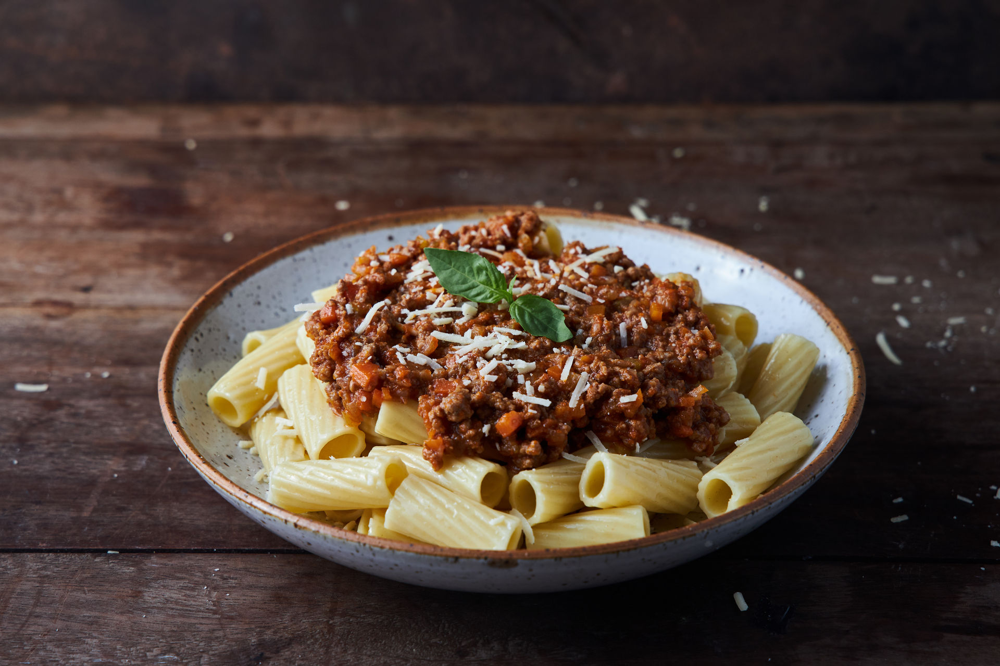

Picar la cebolla, zanahoria y ajo. Sofreír en aceite de oliva
hasta que estén dorados. Agregar la carne picada y cocinar
hasta que cambie de color.
Incorporar el tomate triturado, sal y pimienta.
Cocinar a fuego lento durante 20 minutos
hasta que la salsa espese.
Hervir agua con sal en una olla grande.
Cocinar los fideos según el tiempo indicado en el paquete.
Escurrir y reservar.
Unir los fideos con la salsa boloñesa.
Servir caliente y espolvorear con queso rallado si se desea.